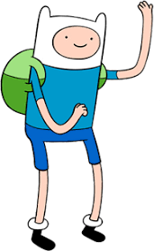
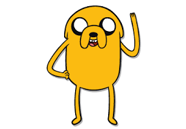
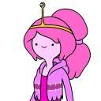
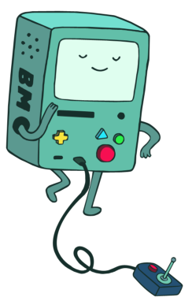
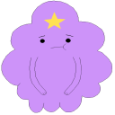
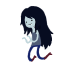

Finn est un gamin farfelu qui rêve un jour de devenir un héros. Il n'a pas l'air bien méchant comme ça, mais face aux forces du Mal, il fonce dans le tas. C'est lui, typique.
Le meilleur ami de Finn est un vieux chien plein de sagesse au cœur d'or. Jake a le pouvoir magique de s'étirer et de s'agrandir. Lorsqu'il ne combat pas les forces du Mal, il joue du violon alto avec sa petite amie, Miss Rainicorn.
En tant que nerd autoproclamée et millionnaire, la Princesse Chewing Gum se jette corps et âme dans tout ce qui touche au monde des geek : de la technologie des fusées à l'élevage des tortues.
Beemo est bien plus que le colocataire de Finn et Jake. Beemo est aussi leur ami, appareil photo, réveil matin et console de jeux.
La Princesse Lumpy Space vient du royaume nuageux de Lumpy Space. Elle est le type même de l'adolescente gâtée.
Marceline est une rockeuse déjantée. Des siècles passés à arpenter la Terre de Ooo ont fait d'elle une tête brûlée qui n'a peur de rien.